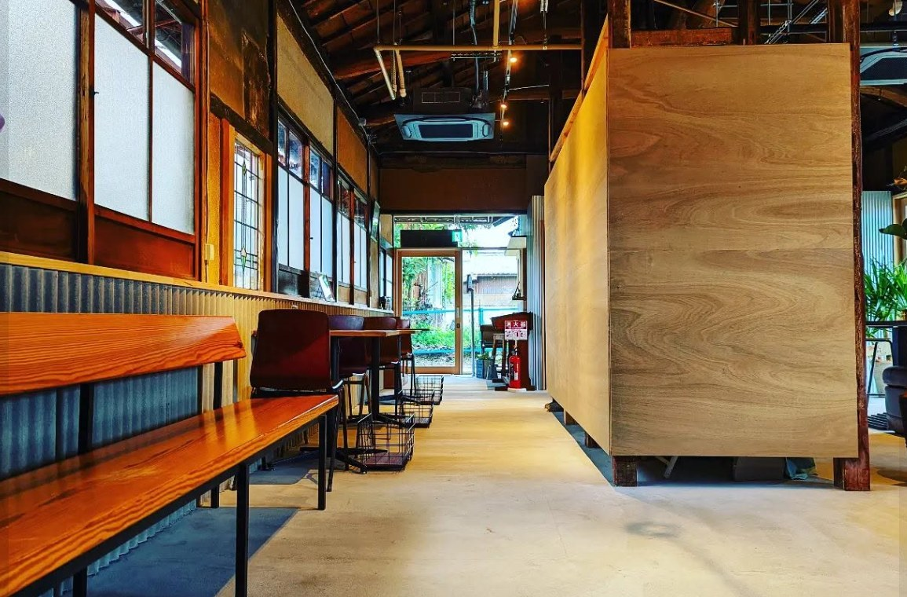

[顔写真]
[料理人名]さん[和食・野菜料理・子ども向け]
「[本人の一言：子どもが食べやすい味を大切にしています]」
出店メニュー
[鶏の照り焼き＋副菜3品] [1,200]円
5品セットの持ち帰りもあります

毎月、瀬田まち路地スティックスと旧大津公会堂で出店しています
写真やレビューだけではなく、実際に料理を食べ、本人に会ってからお願いできます。
「[本人の一言：子どもが食べやすい味を大切にしています]」
「[本人の一言]」
「[本人の一言]」
店で試す
「この人の料理、好きかな？」
家でも試す
「家族も食べるかな？」
家に呼ぶ前に、家でも試せます。
5品を持ち帰り、いつもの食卓で家族の反応を確かめます。
家に呼ぶ
「この人なら、お願いできる」
平日の食事づくりを、
まとめて軽くする3時間。
3時間で7〜10品。冷蔵庫に、数日分のおかずがある安心を。
料金は、先にわかります。
家に来るのは、店頭で料理を食べ、あなたが話して「この人なら」と思えた料理人です。はじめましてが玄関先になることはありません。
今月の出店日から、会ってみたい料理人を選んでください。
「どの人が合うかわからない」「出張の条件だけ聞きたい」という方は、LINEでご相談ください。
店頭であなたが会って選んだ料理人本人です。登録時に運営が本人確認・食品衛生の確認・PL保険等の加入を確認しています。
[運用確定後に記載：料理人が購入して実費精算／利用者が用意 など]。保存容器（約10個）・基本の調味料・調理道具は、ご自宅のものを使います。
うちのシェフ共通ルールで、料理人の拠点から5kmまで500円・10kmまで1,000円・15kmまで1,500円です。15kmを超える場合は個別にご相談ください。駐車場代は実費です。
ご相談時にお子さまの年齢や好みをお知らせください。子ども向けを得意とする料理人もいます。アレルギーがある場合は必ずお知らせください。対応できるかは料理人ごとに確認してご案内します。
自宅出張は3日前まで無料です。2日前30%・前日50%・当日100%。食材の購入後は食材の実費をいただくことがあります。料理人の都合で中止になった場合は全額返金します。
大津市瀬田・石山・膳所・浜大津、草津市南草津周辺を中心に対応しています。それ以外の地域もご相談ください。